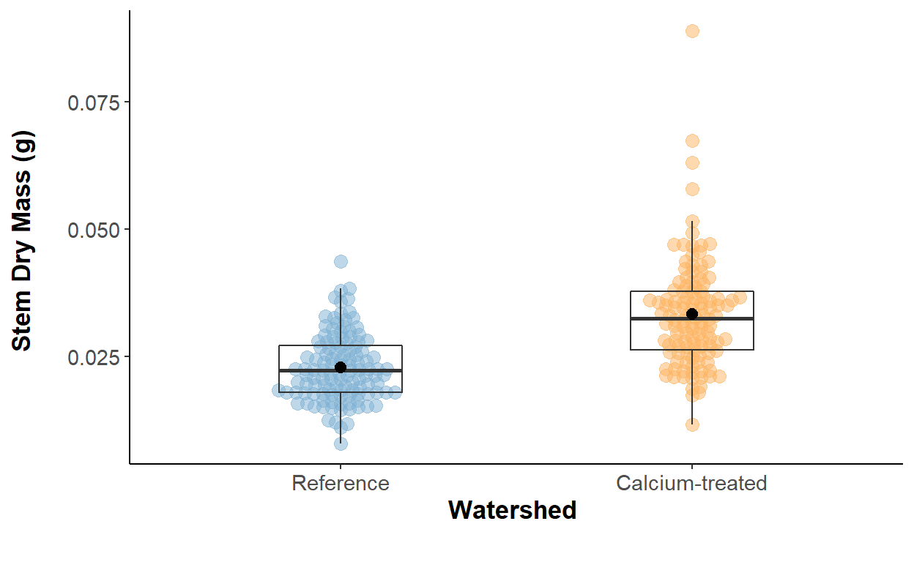

In this project, I investigated differences in sugar maple stem dry mass from treatment and control watersheds in 2003.
This report provides an overview for differences in sugar maple stem dry mass recorded in the year 2003 between two types of watersheds: calcium-treated and reference (no calcium added) sites. Summary statistics for stem dry mass and stem length were reported, and exploratory data analysis was conducted to visualize distributions and determine appropriate tests. Finally, differences in stem dry mass between watersheds were visually and statistically compared.
Is there a significant difference in stem dry mass between sugar maple seedlings grown in the calcium-treated watershed and sugar maple seedling grown in the reference watershed? We aim to investigate whether the median stem dry mass between the two watershed sites are significantly different from one another.
Null hypothesis (\(H_0\)): There will be no difference in the rank order for stem dry mass of sugar maple seedlings grown in the calcium-treated watershed and the reference watershed. The ranks for stem dry mass between the calcium-treated and reference watersheds are equal.
Alternative hypothesis (\(H_1\)): There will be a difference in the rank order for stem dry mass of sugar maple seedlings grown in the calcium-treated watershed and the reference watershed. The ranks for stem dry mass between the calcium-treated and reference watersheds are not equal.
Sugar maple seedling growth was experimentally tested by measuring and comparing stem dry mass (g) from seedlings grown in soil at the calcium-treated watershed to seedlings grown in soil at the reference watershed. Experiment took place at Hubbard Brook Experimental Forest in New Hampshire, United States and data were gathered as part of the Hubbard Brook Ecosystem Study (HBES), which was made publicly available by Dr. Stephanie Juice and Dr. Tim Fahey (Juice & Fahey, 2019). Sugar maple seedlings were collected in August 2003 from low and mid-elevations at the calcium-treated and reference watersheds.
Following summary statistics and exploratory data visualizations, comparison of median stem dry mass between seedlings grown in calcium-treated and reference watersheds was conducted using an unpaired Mann-Whitney U-test with a significance level (\(\alpha\)) or threshold of 0.05. The difference in medians or ranks for stem dry mass between the two watershed sites was described using Cohen’s d effect size. All analyses were conducted in R version 4.1.1 and RStudio version 1.4.1717.
########## Read in the data
maples <- read_csv(here("_projects", "data", "maples.csv"))
########## Clean the data
maples <- maples %>%
#Rename variables to add units
rename(stem_length_mm = stem_length,
leaf1area_cm2 = leaf1area,
leaf2area_cm2 = leaf2area,
leaf_dry_mass_g = leaf_dry_mass,
stem_dry_mass_g = stem_dry_mass,
corrected_leaf_area_cm2 = corrected_leaf_area)
########## Distributions and correlations
#ggpairs(maples)
##Lots of right skewed data
########## Missing data
# gg_miss_upset(maples, nsets = 11)
#
# There are 119 observations with no data for elevation,
# leaf 1 and 2 area, and corrected leaf area.
#
# gg_miss_fct(maples, fct = year)
########## Create table (WIDER)
maples_wider_table <- maples %>%
#Select stem dry mass and stem length
select(watershed, year, stem_dry_mass_g, stem_length_mm) %>%
#Rename watershed types
mutate(watershed = case_when(watershed == "W1" ~ "Calcium-treated",
watershed == "Reference" ~ "Reference")) %>%
#Group by watershed, and year
group_by(watershed, year) %>%
#Summarize mean, standard deviation, and sample size
#Mass = round to 4 decimal places
#Length = round to 1 decimal place
summarize(mean_stem_dry_mass_g = round(mean(stem_dry_mass_g, na.rm = TRUE),
digits = 4),
sd_stem_dry_mass_g = round(sd(stem_dry_mass_g, na.rm = TRUE),
digits = 4),
n_stem_dry_mass_g = sum(!is.na(stem_dry_mass_g)),
mean_stem_length_mm = round(mean(stem_length_mm, na.rm = TRUE),
digits = 1),
sd_stem_length_mm = round(sd(stem_length_mm, na.rm = TRUE),
digits = 1),
n_stem_length_mm = sum(!is.na(stem_length_mm)))
########## Create finalized table
maples_wider_table %>%
#Use kable to make nice format
kable(col.names = c("Watershed", "Year",
"Mean", "Standard Deviation", "Sample Size",
"Mean", "Standard Deviation", "Sample Size"),
#Add caption
caption = c("Descriptive statistics
(mean, standard deviation, sample size)
for sugar maple stem dry mass (g) and stem
length (mm) by watershed and year. Data source:
Juice & Fahey (2019)."),
#Align all cells/columns to center
align = c(rep("c", times = 8))) %>%
#Add borders to left of 3rd and 6th column
column_spec(c(3,6), border_left = TRUE) %>%
#Add horizontal line between watershed types
row_spec(2, extra_css = "border-bottom: 1px solid") %>%
#Collapse rows for watershed
collapse_rows(columns = 1) %>%
#Not make full width
kable_styling(full_width = TRUE) %>%
#Add labels for stem measurement type
add_header_above(c(" " = 2,
"Stem Dry Mass (g)" = 3,
"Stem Length (mm)" = 3))
| Watershed | Year | Mean | Standard Deviation | Sample Size | Mean | Standard Deviation | Sample Size |
|---|---|---|---|---|---|---|---|
| Calcium-treated | 2003 | 0.0333 | 0.0106 | 120 | 87.9 | 14.3 | 120 |
| Calcium-treated | 2004 | 0.0934 | 0.0234 | 60 | 97.5 | 13.8 | 60 |
| Reference | 2003 | 0.0229 | 0.0065 | 120 | 81.0 | 13.9 | 120 |
| Reference | 2004 | 0.0650 | 0.0228 | 59 | 85.9 | 15.6 | 59 |
Sugar maple stem dry mass and stem lengths appear to be greater in 2004 than in 2003 for both types of watershed (Table 1). Additionally, sample sizes for calcium-treated and reference watersheds were reduced by about half in 2004. The researchers have reported that they randomly sampled 120 seedlings each from calcium-treated and reference watersheds during 2003, and only 90 seedlings each from treated and reference watersheds during 2004 (Juice et al., 2006). Missing observations, or discrepancy in sample sizes in this case, could be explained by different reasons such as high seedling mortality rate in the winter months between 2003 and 2004 (Juice et al., 2006). Thus, it is possible that the researchers had fewer seedlings to sample from in 2004 and the average sugar maple stem dry mass and stem length are greater compared to 2003 as a result of survival and continued growth.
########## Subset data
maples_subset <- maples %>%
#Year 2003
filter(year == 2003)
########## Plot visualization
#Plot mass by watershed
ggplot(data = maples_subset, aes(x = watershed,
y = stem_dry_mass_g)) +
#Add beeswarm points
#Change size, spacing, and transparency of points
#Remove legend for redundancy
geom_beeswarm(aes(color = watershed),
size = 3, cex = 1.3, alpha = 0.5,
show.legend = FALSE) +
#Define boxplot
#Add fill color and change transparency
#Change width of box and remove outlier points
#Remove legend for redundancy
geom_boxplot(fill = NA, alpha = 0.4,
width = 0.35, outlier.color = NA,
show.legend = FALSE) +
#Add mean value for watershed type
#Use point, change size and shape, change color and fill
stat_summary(fun = mean,
geom = "point",
shape = 20,
size = 4,
color = "black",
fill = "black") +
#Change x-axis and y-axis labels
labs(x = "Watershed \n",
y = "Stem Dry Mass (g) \n") +
#Use RBrewer color palette to fill jitter points
#From Set3
scale_color_manual(values = c("#80B1D3","#FDB462")) +
#Change theme
theme_classic() +
#Rename watershed values
scale_x_discrete(labels = c("Reference",
"Calcium-treated")) +
#Customize theme of plot
#Bold x-axis and y-axis labels
theme(axis.title.x = element_text(size = 13, face = "bold"),
axis.title.y = element_text(size = 13, face = "bold"),
#Increase x-tick and y-tick text
axis.text.x = element_text(size = 11),
axis.text.y = element_text(size = 11))

Figure 1. Sugar maple stem dry mass (g) observations recorded in the year 2003 for two types of watersheds, reference (no calcium added) and calcium-treated. Blue (reference) and orange (calcium-treated) points indicate individual observations for the dry mass of a sugar maple seedling stem. Boxplot endpoints indicate the 25th and 75th percentile, and the black line within the boxplot indicates the median value while the black point within the boxplot indicates the mean value for each watershed. Data source: Juice & Fahey (2019).
The distribution for stem dry mass for the reference watershed appear to be mostly normal with mean and median values very similar to each other. However, observations for stem dry mass from the calcium-treated watershed group appear to contain some outliers that may potentially skew the distribution for that sample (Figure 1). There appears to be a mean and median difference in stem dry mass between the reference and calcium-treated watershed. More observations in the calcium-treated site appear to have greater mass than the reference site. Thus, there appears to be potential differences in stem dry mass between the two watershed sites. Further investigation, such as running statistical tests, would help determine whether these differences in stem dry mass are important and significant.
########## Vectors
#Vectors for dry mass by watershed, dropping rows with NA values for dry mass
watershed_r <- filter(maples_subset,
watershed == "Reference") %>%
drop_na(stem_dry_mass_g) %>%
pull(stem_dry_mass_g)
watershed_c <- filter(maples_subset,
watershed == "W1") %>%
drop_na(stem_dry_mass_g) %>%
pull(stem_dry_mass_g)
########## Descriptive stats saved as vectors
#Mean and SD of dry mass by watershed
#Sample size for watershed types
watershed_r_mean <- mean(watershed_r)
watershed_r_sd <- sd(watershed_r)
watershed_r_sample <- length(watershed_r)
watershed_c_mean <- mean(watershed_c)
watershed_c_sd <- sd(watershed_c)
watershed_c_sample <- length(watershed_c)
########## Missing data
maples_subset_mass_watershed <- maples_subset %>%
select(stem_length_mm:corrected_leaf_area_cm2)
#ggpairs(maples_subset_mass_watershed)
##Stem dry mass distribution is right-skewed, thus not normal. Sample sizes between calcium-treated and watershed are the same (n = 120). We can see that between the two watershed sites, one has more outliers than the other.
# gg_miss_fct(maples_subset, fct = watershed)
##No missing data for two samples.
########## Explore normality: plots
#Histogram overall
h_full <- ggplot(data = maples_subset, aes(x = stem_dry_mass_g)) +
#Define histogram
geom_histogram(aes(y=..density..),
bins = 50, color = "white",
fill = "darkgreen", alpha = 0.5) +
#Add density
geom_density(alpha = 0.4, fill = "darkgreen") +
#Change axes and add tag
labs(x = "Stem Dry Mass (g)",
y = "Frequency",
tag = "A") +
#Change theme
theme_minimal() +
#Add label for multiplot
theme(plot.tag = element_text())
#Histogram by watershed
h_facet <- ggplot(data = maples_subset, aes(x = stem_dry_mass_g,
fill = watershed)) +
#Define histogram
geom_histogram(aes(y=..density..),
bins = 50, color = "white", alpha = 0.5,
position = "identity") +
#Define density
geom_density(alpha = 0.4) +
#Customize bar colors
scale_fill_manual(name = "Watershed",
labels = c("Reference","Calcium-treated"),
values = c("#80B1D3","#FDB462")) +
#Change axes and add tag
labs(x = "Stem Dry Mass (g)",
y = "Frequency",
tag = "B") +
#Change theme
theme_minimal() +
#Add label for multiplot
theme(plot.tag = element_text())
##Overall histogram looks right-skewed, being pulled by outliers. Histogram for both watersheds look slightly right skewed. Reference group spread around lower mass values, while calcium-treated is more pronounced in its skewness. Calcium-treated group has a few outliers that are much grreater in mass than the majority of recorded observations.
#QQ overall
qq_full <- ggplot(data = maples_subset, aes(sample = stem_dry_mass_g)) +
#Define QQ and add line
stat_qq(color = "darkgreen") + stat_qq_line() +
#Change axes and add tag
labs(x = "Theoretical Quantiles",
y = "Sample Quantiles",
tag = "C") +
#Change theme
theme_minimal() +
#Add label for multiplot
theme(plot.tag = element_text())
#QQ Plot by watershed
qq_facet <- ggplot(data = maples_subset, aes(sample = stem_dry_mass_g,
color = watershed)) +
#Define QQ and add line
stat_qq() + stat_qq_line() +
#Change legend parameters
#Customize point colors
scale_color_manual(name = "Watershed",
labels = c("Reference","Calcium-treated"),
values = c("#80B1D3","#FDB462")) +
#Change axes and add tag
labs(x = "Theoretical Quantiles",
y = "Sample Quantiles",
tag = "D") +
#Change theme
theme_minimal() +
#Add label for multiplot
theme(plot.tag = element_text())
##Overall QQ plot shows that the distribution of the data is U-shaped, meaning there is skewness. Slight U-shaped pattern for reference group, but a very strong U-shaped pattern can be seen in the calcium-treatment group. We can see that neither of these groups hold normal distribution.
#Plot histogram and QQ using patchwork library
(h_full + h_facet)/(qq_full + qq_facet)
########## Explore normality: Shapiro-Wilks test
watershed_shapirotest <- shapiro.test(maples_subset$stem_dry_mass_g)
watershed_r_shapirotest <- shapiro.test(watershed_r)
watershed_C_shapirotest <- shapiro.test(watershed_c)
# Results of Shapiro-Wilks test report a p <.001 for
# over all mass, and p < 0.05 for reference mass and p < .001
# for calcium-treated mass, indicating that we reject the null
# hypothesis that the distribution of the data are not significantly
# different from normal distribution. This means our assumption
# for normality has been violated since both distributions are
# not normal. This also is confirmed with the exploratory
# histogram and QQ plots.
########## Explore equal variance: F-test and Levene's test
#F-test
watershed_ftest <- var.test(stem_dry_mass_g ~ watershed,
data = maples_subset,
alternative = "two.sided")
#Levene's test
watershed_levenetest <- car::leveneTest(stem_dry_mass_g ~ watershed,
data = maples_subset)
watershed_levenetest_tidy <- tidy(watershed_levenetest)
# Results of F-test of equal variances report a p < .001,
# indicating that we reject the null hypothesis that the
# ratio of variances are not equal to 1. This means the variances
# are not the same between the reference and calcium treated
# watersheds. Similarly, results of Levene's test report a p < 0.01,
# indicating that we reject the null hypothesis that the variances
# are equal. This means our assumption for homogeneity of variance
# has been violated and we should need to consider comparing the
# mean differences using a non-parametric test.
########## Decision on test
# Because the distributions if the samples violate assumptions
# of normality and equal variances, we can proceed with using
# a non-parametric test for comparison of stem dry mass between
# different watersheds. Since we are interested in comparing
# the difference between these two groups, we will use the
# Mann-Whitney U test for two unpaired samples. This rank
# based test does not assume normality or equal variances,
# which is appropriate for this case.
Figure 2. Exploratory histograms (top) and Q-Q plots (bottom) for sugar maple stem dry mass (g) recorded in 2003 for the overall dataset (left) and by different watershed sites (right). Histogram and density plots for the overall stem dry mass (A) and for stem dry mass stratified by watershed sites (B) reveal frequency distributions. Green (overall), blue (reference), and orange (calcium-treated) bars represent the frequency for sugar maple stem dry mass, and shaded region under the curve represent the respective densities. The Q-Q plots for the overall stem dry mass (C) and for the stem dry mass stratified by watershed sites (D) reveal distribution about the data. Green (overall), blue (reference), and orange (calcium-treated) points represent the sample quantiles plotted against the theoretical quantiles.
The histograms and density distributions for stem dry mass are right-skewed, with samples from the calcium-treated watershed containing most of the outlier points (Figure 2). The Q-Q plots for stem dry mass confirm that the distributions of the samples are not normal. A Shapiro-Wilk test was performed and showed that the distribution of stem dry mass departed significantly from normality (W = 0.92, p < 0.001), and Levene’s test indicated unequal variances (F(1, 238) = 9.73, p < 0.01) between the reference and calcium-treated samples. As a result, we can proceed with using a non-parametric test for comparison of stem dry mass between different watersheds. Because we are interested in comparing the difference in stem dry mass between two watershed sites, the appropriate test to use will be the Mann-Whitney U-test for unpaired samples as this rank based test does not assume normality or equal variances.
########## Mann-Whitney U test
#Test
watershed_utest <- wilcox.test(watershed_r, watershed_c,
paired = FALSE,
conf.level = 0.95)
#Save as tidy
watershed_utest_tidy <- tidy(watershed_utest)
########## Effect size
watershed_effsize <- cohen.d(watershed_r, watershed_c)
Stem dry mass for sugar maple seedlings recorded in the year 2003 that were grown in calcium-treated watershed sites have greater mass (Mdn = 0.0324 g, SD = \(\pm\) 0.0106 g, n = 120) than those grown in the reference watershed sites (Mdn = 0.0222 g, SD = \(\pm\) 0.0065 g, n = 120) (Figure 1). The absolute difference in medians is 0.0102 g (about a 37.29% difference) and this difference in medians or ranks is statistically significant (Mann-Whitney U-test: U = 2624.5, p < 0.001). The magnitude of the effect size is large (Cohen’s d = -1.19), indicating that the difference in median stem dry mass has practical significance.
In conclusion, adding calcium to acid-rain impacted watersheds seems to influence sugar maple growth by increasing stem dry mass, suggesting that calcium plays an important role in supporting plant growth. This experimental treatment of calcium addition provides evidence for a significant effect on stem dry mass, but other variables could be at play that impact stem dry mass. For example, calcium may contribute to plant survival, in which case the seedlings may have greater mass in the calcium-treated watershed just due to increased health and growth compared to seedlings in the reference watershed (Juice et al., 2006). Thus, while calcium addition does appears to be positively associated with stem dry mass, causal relationships remain to be established until other relationships and interactions with soil pH, manganese, mycorrhizal colonization, and sugar maple nutrition and growth have been considered (Juice et al., 2006).
In conclusion, we found that Exploratory data analysis reveals the following initial findings:
On average, stem dry mass and stem length in calcium-treated watersheds appear to be greater than those in reference watersheds for both 2003 and 2004
Visualizing stem dry mass by watersheds from the year 2003 show possible mean and median differences in stem dry mass
Calcium-treated seedlings have significantly greater ranks for stem dry mass than seedlings in the reference watershed, and the effect size is large (Cohen’s d = -1.19)
Future directions or next steps:
Conduct a one-way ANOVA to compare stem dry mass by watershed and year
Assess other variables collected from the experiment to explore relationships between stem dry mass between the reference and calcium-treated watersheds
Use a rank based effect size to measure differences since we used a rank based test
Juice, S. M., Fahey, T. J., Siccama, T. G., Driscoll, C. T., Denny, E. G., Eagar, C., … & Richardson, A. D. (2006). Response of sugar maple to calcium addition to northern hardwood forest. Ecology, 87(5), 1267-1280.
Juice, S. & Fahey, T. (2019). Health and mycorrhizal colonization response of sugar maple (Acer saccharum) seedlings to calcium addition in Watershed 1 at the Hubbard Brook Experimental Forest ver 3. Environmental Data Initiative. https://doi.org/10.6073/pasta/0ade53ede9a916a36962799b2407097e.
Clarke, E. & Sherrill-Mix, S. (2017). ggbeeswarm: Categorical Scatter (Violin Point) Plots. R package version 0.6.0. https://CRAN.R-project.org/package=ggbeeswarm.
Fox, J. & Weisberg, S. (2019). An {R} Companion to Applied Regression, Third Edition. Thousand Oaks CA: Sage. URL: https://socialsciences.mcmaster.ca/jfox/Books/Companion/.
Neuwirth, E. (2014). RColorBrewer: ColorBrewer Palettes. R package version 1.1-2. https://CRAN.R-project.org/package=RColorBrewer.
Müller, K. (2020). here: A Simpler Way to Find Your Files. R package version 1.0.1. https://CRAN.R-project.org/package=here.
Pedersen, T.L. (2020). patchwork: The Composer of Plots. R package version 1.1.1. https://CRAN.R-project.org/package=patchwork.
Robinson, D., Hayes, A., & Couch, S. (2021). broom: Convert Statistical Objects into Tidy Tibbles. R package version 0.7.9. https://CRAN.R-project.org/package=broom.
Schloerke, B., Cook, D., Larmarange, J., Briatte, F., Marbach, M., Thoen, E., Elberg, A. & Crowley, J. (2021). GGally: Extension to ‘ggplot2’. R package version 2.1.2. https://CRAN.R-project.org/package=GGally.
Tierney, N., Cook, D., McBain, M., & Fay, C. (2021). naniar: Data Structures, Summaries, and Visualisations for Missing Data. R package version 0.6.1. https://CRAN.R-project.org/package=naniar.
Torchiano, M. (2020). effsize: Efficient Effect Size Computation. doi: 10.5281/zenodo.1480624, R package version 0.8.1, https://doi.org/10.5281/zenodo.1480624.
Wickham et al., (2019). Welcome to the tidyverse. Journal of Open Source Software, 4(43), 1686, https://doi.org/10.21105/joss.01686.
Zhu, H. (2021). kableExtra: Construct Complex Table with ‘kable’ and Pipe Syntax. R package version 1.3.4. https://CRAN.R-project.org/package=kableExtra.
For attribution, please cite this work as
Yu (2021, Dec. 2). Hypothesis Testing: Different Watersheds on Sugar Maple Mass Growth. Retrieved from https://esswhy.github.io/projects/hypothesis_testing_supar_maple/
BibTeX citation
@misc{yu2021hypothesis,
author = {Yu, Shuying},
title = {Hypothesis Testing: Different Watersheds on Sugar Maple Mass Growth},
url = {https://esswhy.github.io/projects/hypothesis_testing_supar_maple/},
year = {2021}
}